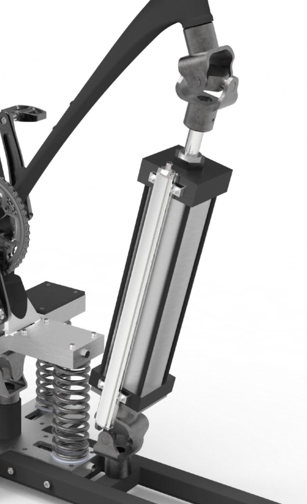

The motivation for the creation of this device came from the rising popularity fo both virtual technologies and outdoor adventure as a form of exercise and entertainment, and after market research, the team decided to focus on the downhilll experience, as there are no products on the market that address uphill and downhill biking.
Although a stationary rig may never be able to truly replicate the thrill of biking outdoors, based on stakeholder research, we identified three problems with conventional mountain biking that TrailBlazer could address: fitness level and barrier to entry, time required to perform conventional mountain biking, and safety.
In addition to mitigating the safety risks associated with conventional mountain biking, I researched safety standards for a variety of exercise equipment standards set by the American Society of Testing and Materials, supplemented by documentation on virtual reality best practices by established virtual reality companies and committees.

For the pitch subsystem, the team selected a combination of active and passive pitching for the final design. The passive system applies restorative torque, via a set of springs at the base of the rig, to the system to provide most of the static holding torque as the rider pitches forwards and back.
The active system applies the necessary torque to accelerate the inertial load of the bike and rider, actively controlled the angular pitch of the rider, simulating changes in terrain, jumps, and landings.
